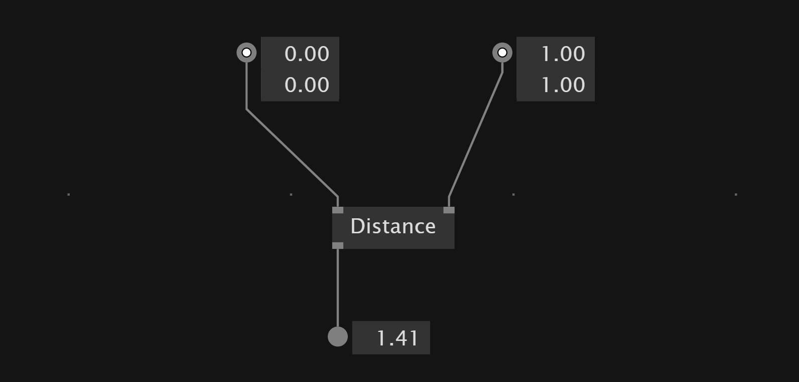
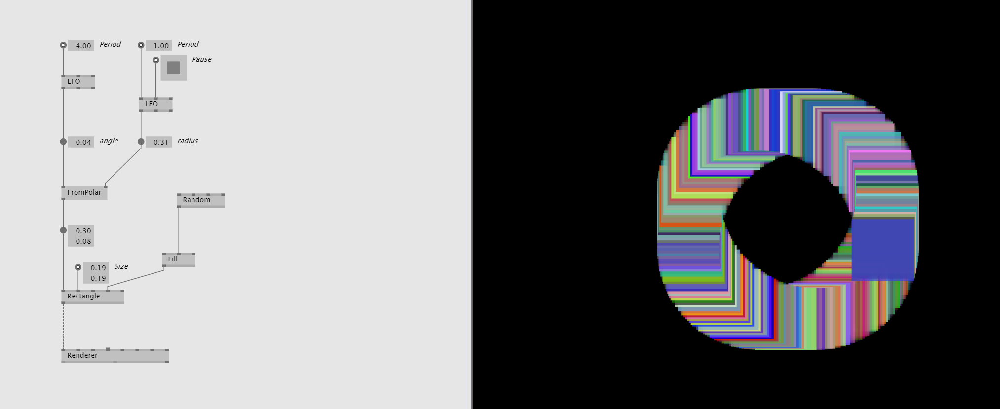

Channel Data
Here is a collection of information about channel data
Create ascending values from 1 to one
LFO node lets us create ascending values from zero to one. Period defines how much time it takes to go from zero to one.
Create Sin Wave values
To create a value that moves along a sine wave we use the SinWave node and plug a LFO node into it.
Create SawTooth values
SawToothWave node
Mirror negative values to positive
The abs node allows us to map negative values to the absolute of the value.
Calculate Distance between Points
If you want to calculate the distance of for example two Vector2 values you can use a Distance node.

Calculate Distance Between Points with ConnectAll
The ConnectAll node allows us to connect all points in 2D or 3D space that have a distance to each other lower than a threshold.

Smooth interpolation between random values

Filter Data
Smother Values with Filter
The Filter node allows us to create smoother values. It comes with different transition modes and easing functions to define the change to the new value.
The Filter node is an adaptive node so we can use it for colors,vectors and more.
OneEuroFilter
A good filter is OneEuroFilter
Filter Values
We can use a Pow To filter the values.
Tween float value
The Tween node interpolates a float to the selected transition behavior.
When we combine a Lerp with a Tween we can introduce easing into lerping between two values.
ADSR
With the ADSR node we can create an envelope generator to control the transition of a 0 to 1 float value.
Envelope generators have four phases Attack,Decay,Sustain and Release to define the progression of the value.
Count
VVVV has multiple counter to count a value up and down. They are different in the way how they behave if the Minimum and Maximum values got reached.
Counter - Counts endless up and down
CounterWrap - Jumps back to Minimum value when Maximimum reched and other way around.
CounterMirror - When Edges reached the count direction get's inversed - Endless counting between edges.
CounterClamp - Stops counting at edge values.
CounterFlop - Returns true if specified number of bangs is detected in time interval.
Counter often can create something similar to a Pad where on every event the value gets added or subtracted. Here the counter holds the position of the rectangle similar to a Pad

Limit ascending value with modulo
We can use a MOD to create modulo behavior and limiting an increasing value into a range.

Delaying data stream by frame
The FrameDelay allows to give the input a delay of one frame.
Map Data
Convert one range into another
 The
The Map(Range) nodes allows us to convert from one range into another.
Map(Change) doesn't limit or adapt values when the input reaches a certain minimum or maximum.
For that we can use MapClamp,MapMirror and MapWrap nodes.
Define range by center and width
The Range(Join Center Width) allows us to create a range by a center and width values.
Evaluate value difference between frames
The FrameDifference node allows us to see how much the data has changed between this and the last frame.
Range
VL has nodes to keep values in a specific range.
Mirror - If values are bigger or smaller than the minimum and maximum, the value continues in the inverse direction.
Wrap - If values are bigger or smaller than the minimum and maximum, the value continues at the opposite edge.
Clamp - If values are bigger or smaller than the minimum and maximum, the node holds their value.
We can use these nodes to define how the values should behave when an input device is outside of minimum and maximum of a range.
Smooth transition between two inputs
The Lerp node allows us to create a smooth transition between the two inputs of the node. The skalar input defines the position of the transition between the two inputs.
Quantize - Convert smooth value into stepped values
The Quantize node allows us to convert an input value into a stepped output value. So for example the smooth LFO node that creates values from 0.0 to 1.0 get quantized into a 0.0 -> 0.2 -> 0.4 -> 0.6 -> 0.8 -> 1.0
Working with Angles
2D Vector from angle and radius
To move an element on a circumference we can transform radius and angle values into a two dimensional vector to position the object. For that we can use the FromPolar node.

2D Vector to angle and radius
The other way around we can convert a 2D vector into an angle and radius value with the ToPolar node. The angle lies between the 2D vector and the x-axis.

Similar to ToPolar, there is also the Angle node, which also takes a Vector2 as input but returns just the angle without the radius.
To calculate the angle between two points that not lie on the x-axis we can use AngleBetween.
Calculate angle between two vector
Slope node allows us to calculate which angle lies between two points in 2D or 3D space.
Slope(3D) returns also the length of the vector between the two points in 3D space.
Attractor
The Attractor node recalculates the position of a point in 2D/3D depending on the position of another point.
This allows us to simulate attraction between points similar to magnetic behavior.
Convert Vector2 to Int2
To convert Vector2 data type into Int2 we can use the Int2(Create Vector2)
Send and Receive Data
With Send(Global) and Receive(Global) you can send data inside a patch. So we send in the current frame and in the next frame we receive it